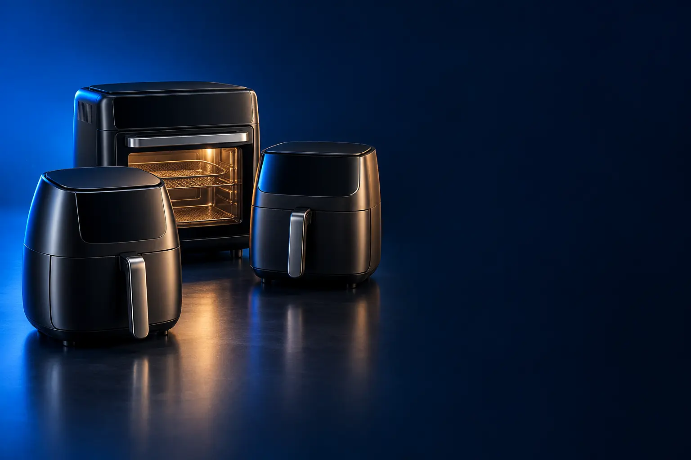

PARA 1 A 2 PESSOAS
Melhor air fryer pequena custo-benefício
Mora sozinho ou a dois? Uma air fryer de até 4,5 litros faz a batata e o frango do dia sem ocupar a bancada.

Melhor custo-benefício para 1 a 2 pessoasMondial AF-30 3,5 L
CURADORIA TECHAPROVADO · 2026
Quem mora sozinho, a família de cinco e quem quer aposentar o forninho precisam de air fryers diferentes. Separamos 17 modelos em 3 perfis, do custo-benefício ao top de linha, e dizemos para quem cada um vale a pena.

NOSSA LEITURA
O erro mais comum é comprar pelo número de litros da caixa. Olhe quantas pessoas comem, o espaço da bancada e se você quer cesto ou porta de forno. O resto é detalhe.
COMECE POR AQUI
PARA 1 A 2 PESSOAS
Mora sozinho ou a dois? Uma air fryer de até 4,5 litros faz a batata e o frango do dia sem ocupar a bancada.
FAMÍLIA
Três pessoas ou mais em casa pedem cesto grande, para não fazer a batata em duas levas.

AIR FRYER FORNO (OVEN)
Air fryer com porta e prateleiras: assa bolo, pizza e frango inteiro, e faz a fritura sem óleo.

A FICHA, TRADUZIDA
01 - CAPACIDADE
A capacidade em litros diz o tamanho da gaveta ou do forno, mas a comida fica no cesto, que é menor. Algumas marcas informam os dois números: a Philips Essential XL, por exemplo, tem 6,2 L no total e 4,6 L úteis.
Como regra prática: até 4 L atende 1 a 2 pessoas; de 5 a 8 L, uma família de 3 a 5; acima disso, ou no formato forno, quem cozinha para muita gente ou para a semana. Mais importante que o volume é a área do fundo, porque a comida crocante não pode ser empilhada.
Por isso o cesto quadrado rende mais que o redondo do mesmo tamanho: cabem mais pedaços numa camada só. Air fryer grande demais para a casa também gasta mais energia e espaço sem necessidade.
02 - POTÊNCIA
Potência, em watts (W), é a força da resistência que aquece o ar. As pequenas ficam entre 900 e 1.500 W; as grandes e os fornos, entre 1.700 e 2.200 W. É ela que garante que um cesto cheio chegue rápido aos 200 °C.
Na prática, a potência acompanha o tamanho: uma air fryer de 8 L com potência baixa demoraria muito. Dentro do mesmo tamanho, a diferença entre marcas é pequena no resultado final.
Potência maior não significa conta de luz muito maior: a air fryer liga por pouco tempo. Comparada ao forno elétrico, ela costuma gastar menos energia porque o espaço a aquecer é menor.
03 - CONTROLES
Os modelos mais simples têm dois botões giratórios: um de temperatura e outro de tempo. Funcionam bem e quase não quebram. Os de painel digital mostram os números na tela e costumam ter programas prontos, como batata, frango e peixe.
Programa pronto ajuda quem está começando, mas depois de algumas semanas a maioria das pessoas aprende o tempo de cada coisa e passa a usar o modo manual. Por isso, não pague muito a mais só por ele.
O que faz diferença de verdade em alguns modelos é o visor (uma janela) para ver o ponto sem abrir, e o cesto duplo, que faz duas receitas ao mesmo tempo com tempos diferentes.
04 - CESTO OU FORNO
A air fryer de cesto (gaveta) é a mais comum: você puxa a gaveta, chacoalha a comida e fecha. É compacta e esquenta muito rápido. A air fryer forno, ou oven, tem porta de vidro e prateleiras, como um forninho.
O forno faz tudo o que a de cesto faz e ainda assa bolo, pizza e, em alguns modelos, frango no espeto. Em troca, ocupa mais espaço na bancada, demora um pouco mais para aquecer e dá mais trabalho para limpar.
Se você já tem forno e só quer batata e frango crocantes, fique na de cesto. Se quer aposentar o forninho elétrico, a oven resolve as duas coisas num aparelho só.
05 - REVESTIMENTO E LIMPEZA
O cesto tem revestimento antiaderente para a comida não grudar. Cada marca dá um nome (Redstone, Duraflon, StarPlate), mas a ideia é a mesma: limpar com esponja macia e não usar palha de aço nem garfo de metal.
Cesto e gaveta que vão na lava-louças economizam tempo. Nos fornos, porta removível e bandejas antiaderentes fazem a mesma diferença.
Para durar mais, use pegador de silicone ou madeira e espere esfriar antes de lavar. O desgaste do revestimento é o principal motivo de troca de air fryer.
A CURADORIA EM DETALHE
17 modelos da pesquisa
PERFIL · 5 MODELOS, DA ENTRADA AO TOP DE LINHA
Para quem mora sozinho, em casal ou cozinha porções pequenas. Aqui o que pesa é ocupar pouco espaço, aquecer rápido e ser fácil de lavar. Começamos pela mini individual e subimos até as de marca com mais garantia e funções prontas.

POR DENTRO DA ESCOLHA
A air fryer de uma pessoa: cabe uma porção individual, ocupa pouquíssimo espaço e usa só 900 W. Tem circulação de ar 360° e indicações de preparo no próprio aparelho.
É a forma mais barata de ter uma air fryer que funciona. A potência baixa ajuda a conta de luz, mas o cesto pequeno obriga a cozinhar em levas quando há mais gente. Se você já sabe que vai dividir com alguém, pule para a Mondial de 3,5 L.
| Capacidade | 1,4 L |
|---|---|
| Potência | 900 W |
| Ar quente | Cyclone Air 360° |
| Voltagem | 127 V (anúncio separado para 220 V) |
| Uso indicado | 1 pessoa |
Fonte: ficha e descrição do anúncio, conferidas em 02/11/2026. Dados informados pelo fabricante. Nota e número de avaliações são de compradores, não teste do TechAprovado.
PEQUENA · CUSTO-BENEFÍCIO 2 de 5
Melhor custo-benefício para 1 a 2 pessoas
3,5 L · 1.500 W · a mais avaliada
Ver preço na AmazonPOR DENTRO DA ESCOLHA
O ponto certo para casal: 3,5 litros, 1.500 W de potência e controle de temperatura até 200 °C. O desenho compacto ocupa pouco da bancada e o cesto é removível.
A AF-30 é o modelo que resolve para a maioria das casas de até duas pessoas. Mais de 15 mil avaliações com nota 4,8 mostram que ela aguenta o uso diário. Acima dela, você paga por marca, cesto quadrado ou painel, não por fritar melhor.
| Capacidade | 3,5 L |
|---|---|
| Potência | 1.500 W |
| Temperatura | Até 200 °C |
| Controle | Analógico com timer |
| Voltagem | 110 V (há versão 220 V) |
Fonte: ficha e descrição do anúncio, conferidas em 02/11/2026. Dados informados pelo fabricante. Nota e número de avaliações são de compradores, não teste do TechAprovado.

PEQUENA · ALTERNATIVA 3 de 5
Outro caminho: cesto quadrado
Cesto quadrado de 4,3 L · 1.500 W
Ver preço na AmazonPOR DENTRO DA ESCOLHA
O cesto quadrado aproveita melhor o espaço que o redondo: cabem mais pedaços lado a lado, sem empilhar, o que deixa tudo mais crocante. Tem temperatura de 80 a 200 °C e timer de 60 minutos.
Não é um degrau acima da Mondial, é outro formato. Com capacidade parecida, o fundo quadrado rende mais área útil. Mais de 1,7 mil avaliações, nota 4,7.
| Capacidade | 4,4 L (cesto de 4,3 L) |
|---|---|
| Cesto | Quadrado, antiaderente |
| Potência | 1.500 W |
| Temperatura | 80 a 200 °C |
| Timer | 60 minutos |
| Voltagem | 220 V |
Fonte: ficha e descrição do anúncio, conferidas em 02/11/2026. Dados informados pelo fabricante. Nota e número de avaliações são de compradores, não teste do TechAprovado.

PEQUENA · AVANÇADO 4 de 5
Rapid Air · mais silenciosa · 2 anos de garantia
Ver preço na AmazonPOR DENTRO DA ESCOLHA
A tecnologia Rapid Air, com o fundo em forma de estrela, faz o ar circular por igual. A Philips informa que ela é até 2 vezes mais silenciosa e até 18% mais rápida, com 23% de economia de energia. As peças vão na lava-louças.
O que se paga a mais aqui é a marca e a garantia de 2 anos, o dobro do comum. O cozimento é parecido com o das concorrentes, mas mais silencioso. Mais de 3,9 mil avaliações, nota 4,8.
| Capacidade | 4,2 L |
|---|---|
| Tecnologia | Rapid Air (fundo em estrela) |
| Timer | Com desligamento automático |
| Limpeza | Peças vão na lava-louças |
| Garantia | 2 anos |
| Voltagem | 110 V (há versão 220 V) |
Fonte: ficha e descrição do anúncio, conferidas em 02/11/2026. Dados informados pelo fabricante. Nota e número de avaliações são de compradores, não teste do TechAprovado.

PEQUENA · TOP DE LINHA 5 de 5
Top de linha para 1 a 2 pessoas
8 receitas no painel · cuba de 4,5 L
Ver preço na AmazonPOR DENTRO DA ESCOLHA
O painel traz 8 receitas pré-sugeridas, então é só girar até o desenho do alimento. A cuba de 4,5 L tem cesto interno de 4 L, as duas peças vão na lava-louças e o timer vai até 60 minutos.
É o topo das pequenas pela praticidade: receitas indicadas no painel, desligamento automático e limpeza fácil. Mais de 4 mil avaliações, nota 4,8.
| Capacidade | Cesto de 4 L (cuba de 4,5 L) |
|---|---|
| Potência | 1.400 W |
| Painel | Mecânico, 8 receitas pré-sugeridas |
| Timer | Até 60 min, desliga sozinha |
| Limpeza | Cuba e cesto vão na lava-louças |
| Voltagem | 127 V |
Fonte: ficha e descrição do anúncio, conferidas em 02/11/2026. Dados informados pelo fabricante. Nota e número de avaliações são de compradores, não teste do TechAprovado.
PERFIL · 6 MODELOS, DA ENTRADA AO TOP DE LINHA
Para casas com três pessoas ou mais. O cesto maior evita cozinhar em várias levas, e nos degraus de cima entram painel digital, visor para acompanhar o preparo e o cesto duplo, que faz duas receitas ao mesmo tempo.

POR DENTRO DA ESCOLHA
Espaço de família pelo preço de uma pequena: 5,5 litros, cesto quadrado e revestimento antiaderente Redstone, que evita grudar. Potência de 1.500 W.
É o jeito mais barato de ter um cesto grande e quadrado. Mais de 2 mil avaliações com nota 4,8 mostram que entrega bem o básico.
| Capacidade | 5,5 L |
|---|---|
| Cesto | Quadrado |
| Revestimento | Antiaderente Redstone |
| Potência | 1.500 W |
| Voltagem | 220 V |
Fonte: ficha e descrição do anúncio, conferidas em 02/11/2026. Dados informados pelo fabricante. Nota e número de avaliações são de compradores, não teste do TechAprovado.
FAMÍLIA · CUSTO-BENEFÍCIO 2 de 6
Melhor custo-benefício para família
6,2 L · 12 em 1 · 1.700 W
Ver preço na AmazonPOR DENTRO DA ESCOLHA
A Philips grande com controles simples: 6,2 litros, 1.700 W e 12 modos de preparo (fritar, assar, grelhar, reaquecer, descongelar, desidratar). O fundo StarPlate evita grudar e cesto e gaveta vão na lava-louças.
É o melhor equilíbrio do perfil: marca com 2 anos de garantia, capacidade XL e controles analógicos fáceis. A Philips informa que cozinha até 50% mais rápido e gasta até 70% menos energia que um forno convencional.
| Capacidade | 6,2 L |
|---|---|
| Potência | 1.700 W |
| Modos | 12 em 1 |
| Controles | Analógicos, até 200 °C |
| Limpeza | Cesto e gaveta na lava-louças |
| Voltagem | 110 V (há versão 220 V) |
Fonte: ficha e descrição do anúncio, conferidas em 02/11/2026. Dados informados pelo fabricante. Nota e número de avaliações são de compradores, não teste do TechAprovado.

FAMÍLIA · INTERMEDIÁRIO 3 de 6
8 L · cesto quadrado amplo · 1.900 W
Ver preço na AmazonPOR DENTRO DA ESCOLHA
O maior cesto da seleção: 8 litros e cesto quadrado que a Mondial descreve como o de maior área plana da categoria. Potência de 1.900 W e temperatura até 200 °C.
Quando o problema é volume, ela resolve: cabe muita comida numa leva só. Os controles continuam simples. Mais de 4,6 mil avaliações, nota 4,7.
| Capacidade | 8 L |
|---|---|
| Cesto | Quadrado, removível |
| Potência | 1.900 W |
| Temperatura | Até 200 °C |
| Voltagem | 110 V (há versão 220 V) |
Fonte: ficha e descrição do anúncio, conferidas em 02/11/2026. Dados informados pelo fabricante. Nota e número de avaliações são de compradores, não teste do TechAprovado.

FAMÍLIA · AVANÇADO 4 de 6
Tela touch · 7 programas · 6,2 L
Ver preço na AmazonPOR DENTRO DA ESCOLHA
Painel touch com 7 programas prontos (congelados, batata fresca, carne, peixe, coxa e mais): toque e ela ajusta tempo e temperatura. Capacidade total de 6,2 L, sendo 4,6 L úteis.
O salto em relação à Série 1000 XL é o painel digital com programas. A Philips informa até 2 vezes menos ruído e 23% de economia de energia. Mais de 1,9 mil avaliações, nota 4,8.
| Capacidade | 6,2 L total, 4,6 L útil |
|---|---|
| Painel | Touch, 7 programas |
| Tecnologia | Rapid Air |
| Garantia | 2 anos |
| Voltagem | 110 V |
Fonte: ficha e descrição do anúncio, conferidas em 02/11/2026. Dados informados pelo fabricante. Nota e número de avaliações são de compradores, não teste do TechAprovado.

FAMÍLIA · ALTERNATIVA 5 de 6
Outro caminho: cesto duplo
2 cestos · 2 receitas ao mesmo tempo · 2.200 W
Ver preço na AmazonPOR DENTRO DA ESCOLHA
Dois cestos removíveis (8 L no total) com tempos e temperaturas independentes. A função sincronizar faz as duas receitas ficarem prontas juntas: a carne num cesto, a batata no outro.
Não é um degrau acima das de cesto único, é outro jeito de cozinhar. Vale para família que faz refeição completa na air fryer. Cerca de 200 avaliações, nota 4,8.
| Capacidade | 8 L em 2 cestos |
|---|---|
| Controle | Tempo e temperatura por cesto |
| Função | Sincronizar |
| Potência | 2.200 W |
| Voltagem | 110 V |
Fonte: ficha e descrição do anúncio, conferidas em 02/11/2026. Dados informados pelo fabricante. Nota e número de avaliações são de compradores, não teste do TechAprovado.

FAMÍLIA · TOP DE LINHA 6 de 6
Top de linha para família
Visor com luz · 12 programas · Rapid Air Plus
Ver preço na AmazonPOR DENTRO DA ESCOLHA
Visor com iluminação interna para acompanhar o preparo sem abrir a gaveta, tecnologia Rapid Air Plus, 1.800 W e painel digital com 12 funções e temperatura de 40 a 200 °C. Capacidade de 7,2 L (4,7 L úteis).
O topo da família junta visor, painel digital completo e timer de até 24 horas (útil para desidratar ou fermentar iogurte). Tem 2 anos de garantia.
| Capacidade | 7,2 L total, 4,7 L útil |
|---|---|
| Visor | Com iluminação interna |
| Painel | Digital, 12 funções |
| Temperatura | 40 a 200 °C |
| Potência | 1.800 W |
| Voltagem | 110 V |
Fonte: ficha e descrição do anúncio, conferidas em 02/11/2026. Dados informados pelo fabricante. Nota e número de avaliações são de compradores, não teste do TechAprovado.
PERFIL · 6 MODELOS, DA ENTRADA AO TOP DE LINHA
A air fryer forno, ou oven, tem porta de vidro e prateleiras, como um forninho. Faz tudo o que a air fryer de cesto faz e ainda assa bolo, pizza e, em alguns modelos, frango no espeto. Ocupa mais espaço na bancada, então meça antes.

FORNO · ENTRADA 1 de 6
Assa, frita, desidrata e reaquece · 1.800 W
Ver preço na AmazonPOR DENTRO DA ESCOLHA
A entrada no formato forno: 12 litros, 1.800 W e quatro funções (assar, fritar sem óleo, desidratar e reaquecer). A porta é removível, o que facilita a limpeza.
É o jeito mais barato de testar a air fryer forno. Entrega o essencial, sem painel digital nem acessórios extras. Mais de 2,4 mil avaliações, nota 4,6.
| Capacidade | 12 L |
|---|---|
| Funções | Assar, fritar, desidratar, reaquecer |
| Potência | 1.800 W |
| Porta | Removível |
| Voltagem | 110 V |
Fonte: ficha e descrição do anúncio, conferidas em 02/11/2026. Dados informados pelo fabricante. Nota e número de avaliações são de compradores, não teste do TechAprovado.
FORNO · CUSTO-BENEFÍCIO 2 de 6
Melhor custo-benefício em air fryer forno
12 L · cesto de 5 L + 3 assadeiras · 2.000 W
Ver preço na AmazonPOR DENTRO DA ESCOLHA
Vem com cesto de 5 L e três assadeiras antiaderentes (Duraflon), então dá para fritar no cesto ou assar em camadas. São 12 litros e 2.000 W.
Com quase 10 mil avaliações e nota 4,7, é a oven mais escolhida. Os acessórios incluídos fazem diferença: as três assadeiras permitem preparar mais de uma coisa de uma vez.
| Capacidade | 12 L |
|---|---|
| Acessórios | Cesto de 5 L + 3 assadeiras |
| Antiaderente | Duraflon |
| Potência | 2.000 W |
| Voltagem | 110 V (há versão 220 V) |
Fonte: ficha e descrição do anúncio, conferidas em 02/11/2026. Dados informados pelo fabricante. Nota e número de avaliações são de compradores, não teste do TechAprovado.

FORNO · INTERMEDIÁRIO 3 de 6
Painel touch · 12 L · 1.800 W
Ver preço na AmazonPOR DENTRO DA ESCOLHA
A oven com painel touch: 12 litros, 1.800 W e três funções numa peça só. O painel digital deixa ajustar tempo e temperatura com mais precisão que os botões giratórios.
O degrau acima da Mondial é o painel touch. A capacidade é a mesma. Mais de 4,6 mil avaliações, nota 4,7.
| Capacidade | 12 L |
|---|---|
| Painel | Touch |
| Funções | 3 em 1 |
| Potência | 1.800 W |
| Voltagem | 127 V |
Fonte: ficha e descrição do anúncio, conferidas em 02/11/2026. Dados informados pelo fabricante. Nota e número de avaliações são de compradores, não teste do TechAprovado.

FORNO · AVANÇADO 4 de 6
Janela · 9 programas · 4 acessórios
Ver preço na AmazonPOR DENTRO DA ESCOLHA
Nove programas prontos, de pão de queijo a iogurte e desidratação, janela para acompanhar o preparo e quatro acessórios antiaderentes: duas grelhas, coletor de gordura e cesto com pegador removível.
O que se paga aqui é a marca, os programas e os acessórios. Faz sentido para quem vai usar a função iogurte e a desidratação. Mais de 2 mil avaliações, nota 4,7.
| Capacidade | 12 L |
|---|---|
| Programas | 9 (iogurte, desidratar, pizza, bolo e mais) |
| Acessórios | 2 grelhas, coletor, cesto |
| Janela | Sim |
| Potência | 1.600 W |
| Voltagem | 110 V |
Fonte: ficha e descrição do anúncio, conferidas em 02/11/2026. Dados informados pelo fabricante. Nota e número de avaliações são de compradores, não teste do TechAprovado.

FORNO · AVANÇADO 5 de 6
Espeto giratório · 10 funções · 1.700 W
Ver preço na AmazonPOR DENTRO DA ESCOLHA
A oven com espeto giratório (rotisserie) para frango assado inteiro, além de air fry, gratinar, reaquecer e desidratar. Painel digital com mais de 10 funções, 7 receitas e aviso sonoro para virar o alimento.
O diferencial é o espeto, que nenhuma outra da escada tem. Vem com duas bandejas antiaderentes. Mais de 1,5 mil avaliações, nota 4,7.
| Capacidade | 12 L |
|---|---|
| Funções | Air fry, gratinar, reaquecer, desidratar, rotisserie |
| Painel | Digital, 7 receitas |
| Acessórios | Espeto e 2 bandejas |
| Potência | 1.700 W |
Fonte: ficha e descrição do anúncio, conferidas em 02/11/2026. Dados informados pelo fabricante. Nota e número de avaliações são de compradores, não teste do TechAprovado.

FORNO · TOP DE LINHA 6 de 6
Top de linha em air fryer forno
25 L · air fryer + forno · painel digital
Ver preço na AmazonPOR DENTRO DA ESCOLHA
Com 25 litros, substitui o forno elétrico de bancada: aquece, tosta, assa, gratina e grelha, além de fritar sem óleo. Painel digital e 2.000 W.
É o topo pelo tamanho: cabe assadeira de bolo e pizza maior. Se a sua cozinha não tem espaço, a de 12 L entrega a fritura sem óleo do mesmo jeito.
| Capacidade | 25 L |
|---|---|
| Funções | Air fryer + forno (assar, tostar, gratinar, grelhar) |
| Painel | Digital |
| Potência | 2.000 W |
| Voltagem | 110 V (há versão 220 V) |
Fonte: ficha e descrição do anúncio, conferidas em 02/11/2026. Dados informados pelo fabricante. Nota e número de avaliações são de compradores, não teste do TechAprovado.
Nenhum modelo encontrado. Tente outro termo ou volte para Todos.
LADO A LADO
| Modelo | Perfil | Posição | Capacidade | Destaque | Nota (avaliações) |
|---|---|---|---|---|---|
| Gaabor Mini Air Fryer 1,4 L | Pequena | Entrada | 1,4 L | Individual · 1,4 L · 900 W | 4,7 (604) |
| Mondial AF-30 3,5 L | Pequena | Custo-benefício | 3,5 L | 3,5 L · 1.500 W · a mais avaliada | 4,8 (15,1 mil) |
| Philco PFR15PG 4,4 L cesto quadrado | Pequena | Alternativa | 4,4 L (cesto de 4,3 L) | Cesto quadrado de 4,3 L · 1.500 W | 4,7 (1,7 mil) |
| Philips Walita Série 1000 4,2 L | Pequena | Avançado | 4,2 L | Rapid Air · mais silenciosa · 2 anos de garantia | 4,8 (3,9 mil) |
| Electrolux EAF31 4 L | Pequena | Top de linha | Cesto de 4 L (cuba de 4,5 L) | 8 receitas no painel · cuba de 4,5 L | 4,8 (4,2 mil) |
| Britânia BFR50 5,5 L | Família | Entrada | 5,5 L | 5,5 L · cesto quadrado · Redstone | 4,8 (2,1 mil) |
| Philips Walita Série 1000 XL 6,2 L | Família | Custo-benefício | 6,2 L | 6,2 L · 12 em 1 · 1.700 W | 4,8 (3,9 mil) |
| Mondial AFN-80 8 L | Família | Intermediário | 8 L | 8 L · cesto quadrado amplo · 1.900 W | 4,7 (4,7 mil) |
| Philips Walita Essential XL Digital 6,2 L | Família | Avançado | 6,2 L total, 4,6 L útil | Tela touch · 7 programas · 6,2 L | 4,8 (1,9 mil) |
| Mondial Dual AFD-01 8 L (cesto duplo) | Família | Alternativa | 8 L em 2 cestos | 2 cestos · 2 receitas ao mesmo tempo · 2.200 W | 4,8 (198) |
| Philips Walita Digital 7,2 L com visor | Família | Top de linha | 7,2 L total, 4,7 L útil | Visor com luz · 12 programas · Rapid Air Plus | 4,8 (247) |
| Elgin Oven Fry 4 em 1 12 L | Forno | Entrada | 12 L | Assa, frita, desidrata e reaquece · 1.800 W | 4,6 (2,4 mil) |
| Mondial Oven AFON-12L | Forno | Custo-benefício | 12 L | 12 L · cesto de 5 L + 3 assadeiras · 2.000 W | 4,7 (9,9 mil) |
| Oster Oven Fryer 12 L 3 em 1 | Forno | Intermediário | 12 L | Painel touch · 12 L · 1.800 W | 4,7 (4,6 mil) |
| Philips Walita Airfryer Forno 12 L | Forno | Avançado | 12 L | Janela · 9 programas · 4 acessórios | 4,7 (2,1 mil) |
| Electrolux Air Fryer Forno 12 L com espeto | Forno | Avançado | 12 L | Espeto giratório · 10 funções · 1.700 W | 4,7 (1,6 mil) |
| Mondial Oven Digital 25 L | Forno | Top de linha | 25 L | 25 L · air fryer + forno · painel digital | 4,3 (152) |
CONSIDERAÇÕES FINAIS
Das air fryers mais vendidas do país, com 3,5 L e controles simples. Resolve o dia a dia sem erro.
Cesto de 6,2 L, marca forte e 2 anos de garantia, sem pagar por painel digital.
Dois cestos com tempos e temperaturas próprios, que terminam juntos.
Os tops de linha (Electrolux EAF31, Philips Digital 7,2 L e Mondial Oven 25 L) fazem sentido para quem quer programas prontos, visor ou substituir o forno. Para fritar batata e frango, os custo-benefício entregam o mesmo resultado.
Para 1 a 2 pessoas, a Mondial AF-30 de 3,5 L. Para família, a Philips Walita Série 1000 XL de 6,2 L. No formato forno, a Mondial Oven de 12 L.
Até 4 L para 1 a 2 pessoas, de 5 a 8 L para família de 3 a 5, e o formato forno (12 L ou mais) para quem cozinha muito ou quer substituir o forninho.
Ela usa entre 900 e 2.200 W, mas por pouco tempo. Para porções pequenas e médias, costuma gastar menos que o forno elétrico.
A de cesto é mais compacta e rápida. A oven tem porta e prateleiras, assa bolo e pizza e substitui o forninho, mas ocupa mais espaço.
Porque ele muda várias vezes por dia. Usamos o preço só para montar a escada de cada perfil; o botão leva ao valor atualizado na loja.
TRANSPARÊNCIA EDITORIAL
Separamos os perfis pelo que as pessoas mais procuram: pequena para poucas pessoas, grande para família e air fryer forno. Cada modelo precisa responder com clareza "para quem ele é o certo".
Em cada perfil há modelos em faixas de preço diferentes, e cada degrau precisa entregar algo que o anterior não entrega. Dois modelos com a mesma proposta não entram juntos.
Ficha, nota e número de avaliações foram conferidos nos anúncios das lojas em 02/11/2026. As avaliações são de compradores, não teste nosso.
Os links de compra desta página são de afiliado: se você comprar por eles, o TechAprovado pode ganhar uma comissão, sem custo adicional para você. Isso não muda a ordem nem a escolha dos produtos.
📲 GUIAS E DICAS NO SEU FEED
Dicas práticas antes de comprar, em carrosséis e vídeos curtos, sempre com link para o guia completo.